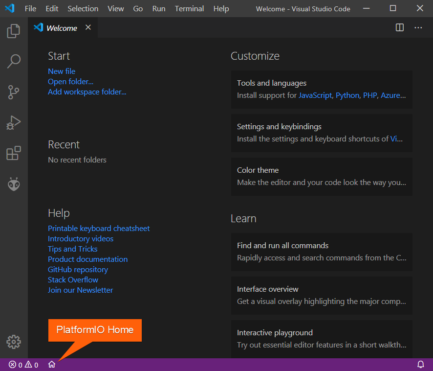
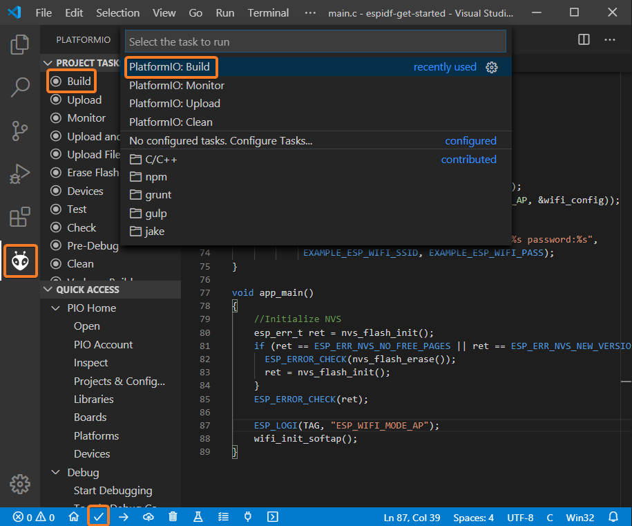

Práctica 1. Introducción al entorno de desarrollo ESP-IDF
Objetivos
-
Conocer dos entornos básicos de desarrollo para el ESP32: uno basado en línea de comandos, y otro en la herramienta PlatformIO
-
Ser capaz de compilar, flashear y monitorizar proyectos sencillos basados en ESP-IDF
-
Entender el funcionamiento básico de una aplicación ESP-IDF que haga uso de las capacidades WiFi del ESP32
-
Personalizar variables de configuración de proyectos ESP-IDF
-
Responder a eventos básicos de red en ESP-IDF
Introducción
ESP-IDF (Espressif IoT Development Framework) es el entorno de desarrollo oficial de Espressif para los SoCs ESP32 y ESP32-S. Este entorno de desarrollo y conjunto de herramientas permite desarrollar firmwares eficientes para dichas placas utilizando las interfaces de comunicación WiFi y Bluetooth, así como gestionar múltiples características de los SoCs que iremos desgranando en futuras prácticas.
ESP-IDF utiliza como base FreeRTOS para la construcción del firmware, aunque añade multitud de componentes para ofrecer un soporte de mayor nivel para la interacción con protocolos de comunicación de bajo y alto nivel, la mayoría de ellos enfocados al ámbito de comunicación en Internet de las Cosas.
La presente práctica pretende ser una introducción básica a la puesta en marcha del entorno de desarrollo ESP-IDF sobre un sistema operativo Linux, ofreciendo dos alternativas básicas: línea de comandos y un plugin específico para VSCode (PlatformIO). Además, veremos de forma superficial la estructura básica de un programa sencillo desarrollado usando ESP-IDF, así como ejemplos básicos para la puesta en marcha de la interfaz WiFi sobre una placa ESP32.
Recuerda
La presente práctica no tiene tarea entregable asociada más allá de una memoria justificativa del trabajo realizado. Por tanto, recuerda apuntar y reportar los pasos y tareas realizadas durante su desarrollo para plasmarlas en una breve memoria entregable final.
Flujo de trabajo. Entorno basado en línea de comandos
Instalación de prerequisitos
ESP-IDF requiere ciertos paquetes software instalados en el sistema para poder desarrollar los códigos y descargarlos sobre el ESP32. Se muestran a continuación los requisitos y modo de instalación para máquinas Ubuntu/Debian (como la máquina virtual del curso), aunque la documentación de ESP-IDF incluye instrucciones para otras distribuciones y sistemas operativos, incluyendo Windows y MacOS.
En tu máquina virtual, instala los paquetes necesarios utilizando (como superusuario):
sudo apt-get install git wget flex bison gperf python python3-pip python-setuptools cmake ninja-build ccache libffi-dev libssl-dev dfu-util
Además, es necesario, en todo caso, que el usuario que estés utilizando pertenezca
al grupo dialout (puedes editar el fichero /etc/group añadiendo a tu
usuario a la línea que indica el grupo correspondiente, e iniciando de nuevo
tu sesión).
Instala y configura Python 3 para su uso por defecto en tu distribución:
sudo apt-get install python3 python3-pip python3-setuptools
sudo update-alternatives --install /usr/bin/python python /usr/bin/python3 10
Obtención de ESP-IDF
Utilizaremos las versiones de ESP-IDF a obtener directamente desde el repositorio Github oficial (concretamente, en su versión 4.1). Para ello, ejecuta desde tu directorio de inicio:
mkdir -p ~/esp
cd ~/esp
git clone --recursive https://github.com/espressif/esp-idf.git
cd esp-idf
git fetch
git checkout release/v4.1
git pull
git submodule update --init --recursive
Instalación de herramientas adicionales
Desde el directorio esp-idf, ejecuta el script install.sh para instalar
las herramientas (toolchain) específicas para tu versión:
sh install.sh
Preparación del entorno
Tras el inicio de cada sesión, deberás establecer valores correctos para ciertas
variables de entorno. Afortunadamente, se proporciona un script (export.sh)
que te permitirá establecerlas de forma automática:
. export.sh
Puedes añadir esta línea en cualquier fichero de inicio de sesión para no tener que ejecutar el comando cada vez.
En cualquier caso, en este punto deberías tener acceso a un programa llamado
idf.py, a través del cual gestionaremos el flujo de trabajo. Compruébalo y
observa si la version de IDF con la que estás trabajando es efectivamente la
4.1 (el número de subversión podría variar en tu salida):
$ idf.py --version
ESP-IDF v4.1-332-g7b7c64107
Preparación del proyecto
En esta primera parte, nos basaremos en un ejemplo sencillo de código desarrollado en base a ESP-IDF. No es el objetivo de esta práctica analizar en detalle los la estructura de dicho código (al menos de momento), sino utilizarlo para ilustrar el flujo de trabajo típico en un proyecto ESP-IDF.
Recuerda
Tras la ejecución del script export.sh, tendrás definida una variable
de entorno llamada IDF_PATH. Consulta su valor y comprueba que apunta,
efectivamente, al directorio de instalación de IDF. La utilizaremos a
partir de ahora para referirnos a él.
Para empezar, toma el ejemplo hello_world proporcionado como parte de la instalación
básica de IDF, y cópialo en cualquier directorio del sistema de ficheros:
cp -R $IDF_PATH/examples/get-started/hello_world $HOME/
cd $HOME/hello_world
Compilación
El proceso de compilación básico utiliza el script idf.py:
idf.py build
Si todo ha ido bien, en el directorio build se habrán generado los objetos
y binarios listos para ser flasheados en el ESP32.
Flasheado
El proceso de flasheado básico utiliza el script idf.py:
idf.py -p PUERTO flash
En este punto, el ESP32 debe estar conectado utilizando el cable microUSB, y si estás trabajando en una máquina virtual, debe haberse hecho visible a la misma (por ejemplo, en VirtualBox, a través del menú Dispositivos->USB->Silicon Labs USB to UART Bridge Controller).
En todo caso, la salida del comando dmesg tras la conexión del dispositivo
te proporcionará información sobre el PUERTO que debes utilizar en el proceso
de flasheado y montorización posterior.
Monitorización
Si todo ha ido bien, el proceso de monitorización nos permitirá observar la
salida del programa que tenemos ejecutando en la placa. Para ello, de nuevo,
usamos el script idf.py:
idf.py -p PUERTO monitor
Nota
Comprueba que, efectivamente, puedes realizar el proceso de compilación,
flasheado y monitorización del programa sobre la placa ESP32. Recuerda
que el botón EN, justo al lado del conector microUSB, forzará un
reseteo de la misma.
Flujo de trabajo. Entorno basado en PlatformIO
El anterior flujo de trabajo puede también desarrollarse desde otros entornos de desarrollo. En nuestro caso, se muestran a continuación los pasos principales para la integración de ESP-IDF con VSCode, utilizando la plataforma PlatformIO. Las máquinas virtuales proporcionadas en el curso ya tienen instalada la última versión de PlatformIO y ESP-IDF, por lo que se refiere al lector a la documentación oficial de PlatformIO para llevar a cabo dicha instalación en otros sistemas operativos.
Configuración de un proyecto
La forma más sencilla de crear un nuevo proyecto consiste en pulsar el botón PlatformIO Home situado en la parte inferior de la pantalla:

A continuación, clica en New Project y selecciona como placa de desarrollo ESP DevkitC o Espressif ESP32 Dev Module. Selecciona ESP-IDF como framework de desarrollo para el proyecto:

Adición de ficheros a un proyecto
Crea un nuevo fichero main.c (si no existe) en el directorio src de tu
proyecto, o modifica el que ya existe utilizando, por ejemplo, el siguiente
código:
#include <string.h>
#include "freertos/FreeRTOS.h"
#include "freertos/task.h"
#include "esp_system.h"
#include "esp_wifi.h"
#include "esp_event.h"
#include "esp_log.h"
#include "nvs_flash.h"
#include "lwip/err.h"
#include "lwip/sys.h"
#define EXAMPLE_ESP_WIFI_SSID "mywifissid"
#define EXAMPLE_ESP_WIFI_PASS "mywifipass"
#define EXAMPLE_MAX_STA_CONN (3)
static const char *TAG = "wifi softAP";
static void wifi_event_handler(void* arg, esp_event_base_t event_base,
int32_t event_id, void* event_data)
{
if (event_id == WIFI_EVENT_AP_STACONNECTED) {
wifi_event_ap_staconnected_t* event = (wifi_event_ap_staconnected_t*) event_data;
ESP_LOGI(TAG, "station "MACSTR" join, AID=%d",
MAC2STR(event->mac), event->aid);
} else if (event_id == WIFI_EVENT_AP_STADISCONNECTED) {
wifi_event_ap_stadisconnected_t* event = (wifi_event_ap_stadisconnected_t*) event_data;
ESP_LOGI(TAG, "station "MACSTR" leave, AID=%d",
MAC2STR(event->mac), event->aid);
}
}
void wifi_init_softap()
{
tcpip_adapter_init();
ESP_ERROR_CHECK(esp_event_loop_create_default());
wifi_init_config_t cfg = WIFI_INIT_CONFIG_DEFAULT();
ESP_ERROR_CHECK(esp_wifi_init(&cfg));
ESP_ERROR_CHECK(esp_event_handler_register(WIFI_EVENT, ESP_EVENT_ANY_ID, &wifi_event_handler, NULL));
wifi_config_t wifi_config = {
.ap = {
.ssid = EXAMPLE_ESP_WIFI_SSID,
.ssid_len = strlen(EXAMPLE_ESP_WIFI_SSID),
.password = EXAMPLE_ESP_WIFI_PASS,
.max_connection = EXAMPLE_MAX_STA_CONN,
.authmode = WIFI_AUTH_WPA_WPA2_PSK
},
};
if (strlen(EXAMPLE_ESP_WIFI_PASS) == 0) {
wifi_config.ap.authmode = WIFI_AUTH_OPEN;
}
ESP_ERROR_CHECK(esp_wifi_set_mode(WIFI_MODE_AP));
ESP_ERROR_CHECK(esp_wifi_set_config(ESP_IF_WIFI_AP, &wifi_config));
ESP_ERROR_CHECK(esp_wifi_start());
ESP_LOGI(TAG, "wifi_init_softap finished. SSID:%s password:%s",
EXAMPLE_ESP_WIFI_SSID, EXAMPLE_ESP_WIFI_PASS);
}
void app_main()
{
//Initialize NVS
esp_err_t ret = nvs_flash_init();
if (ret == ESP_ERR_NVS_NO_FREE_PAGES || ret == ESP_ERR_NVS_NEW_VERSION_FOUND) {
ESP_ERROR_CHECK(nvs_flash_erase());
ret = nvs_flash_init();
}
ESP_ERROR_CHECK(ret);
ESP_LOGI(TAG, "ESP_WIFI_MODE_AP");
wifi_init_softap();
}
De momento no analizaremos el funcionamiento del código (lo haremos más adelante) pero básicamente establece un Punto de Acceso inalámbrico abierto a conexiones autenticadas vía WPA2.
Compilación del proyecto
Para compilar del proyecto, despliega la paleta de comandos (menú View -> Command Palette)
y ejecuta la orden PlatformIO: Build desde ella. También puedes presionar
el botón Build (con forma de check) en la barra inferior de PlatformIO:

Si todo ha ido bien, deberías ver un mensaje final similar al siguiente en la terminal del sistema:

Flasheado del proyecto
Para llevar a cabo el proceso de subida (upload) del proyecto a la placa,
podemos utilizar la orden PlatformIO: Upload a través de la paleta de comandos,
o bien presionar el botón correspondiente en la barra inferior (con un símbolo
de flecha a izquierda):

Monitorización del proyecto
Por último, podemos monitorizar el proyecto utilizando la orden PlatformIO: Monitor
de la paleta de comandos o a través de la barra inferior, usando el botón con
un enchufe como símbolo:

Análisis de un proyecto sencillo (Hola, mundo) en ESP-IDF
Nota
Las siguientes tareas pueden realizarse desde línea de comandos o utilizando PlatformIO. Para familiarizarse con en entorno de bajo nivel, sin embargo, se sugiere el uso de línea de comandos.
Observa la estructura general del directorio hello_world que compilaste
anteriormente. Específicamente, nos interesará inspeccionar la estructura
básica de un programa principal para ESP-IDF, en este caso hello_world_main.c.
#include <stdio.h>
#include "sdkconfig.h"
#include "freertos/FreeRTOS.h"
#include "freertos/task.h"
#include "esp_system.h"
#include "esp_spi_flash.h"
void app_main(void)
{
printf("Hello world!\n");
/* Print chip information */
esp_chip_info_t chip_info;
esp_chip_info(&chip_info);
printf("This is %s chip with %d CPU cores, WiFi%s%s, ",
CONFIG_IDF_TARGET,
chip_info.cores,
(chip_info.features & CHIP_FEATURE_BT) ? "/BT" : "",
(chip_info.features & CHIP_FEATURE_BLE) ? "/BLE" : "");
printf("silicon revision %d, ", chip_info.revision);
printf("%dMB %s flash\n", spi_flash_get_chip_size() / (1024 * 1024),
(chip_info.features & CHIP_FEATURE_EMB_FLASH) ? "embedded" : "external");
printf("Minimum free heap size: %d bytes\n", esp_get_minimum_free_heap_size());
for (int i = 10; i >= 0; i--) {
printf("Restarting in %d seconds...\n", i);
vTaskDelay(1000 / portTICK_PERIOD_MS);
}
printf("Restarting now.\n");
fflush(stdout);
esp_restart();
}
A alto nivel, la función app_main es el punto de entrada a todo programa
desarrollado usando ESP-IDF. De modo más específico, tras la
carga del sistema, la llamada tarea principal (main task) ejecuta el
código proporcionado por el usuario e implementado en la función app_main. Tanto
el tamaño de pila asignado como la prioridad de esta tarea puede ser configuradas
por el desarrollador a través del sistema de configuración de ESP-IDF (lo veremos
más adelante). Normalmente, esta función se utiliza para llevar a cabo tareas
iniciales de configuración o para crear y lanzar a ejecución otras tareas. De
cualquier modo (como es el caso), se puede implementar cualquier funcionalidad
dentro de la función app_main.
En este ejemplo, se muestra en primer lugar información genérica sobre el SoC que está ejecutando el firmware:
/* Print chip information */
esp_chip_info_t chip_info;
esp_chip_info(&chip_info);
printf("This is %s chip with %d CPU cores, WiFi%s%s, ",
CONFIG_IDF_TARGET,
chip_info.cores,
(chip_info.features & CHIP_FEATURE_BT) ? "/BT" : "",
(chip_info.features & CHIP_FEATURE_BLE) ? "/BLE" : "");
printf("silicon revision %d, ", chip_info.revision);
printf("%dMB %s flash\n", spi_flash_get_chip_size() / (1024 * 1024),
(chip_info.features & CHIP_FEATURE_EMB_FLASH) ? "embedded" : "external");
printf("Minimum free heap size: %d bytes\n", esp_get_minimum_free_heap_size());
A continuación, dentro de un bucle sencillo, el sistema muestra un mensaje
y difiere la ejecución de la tarea durante un período determinado de tiempo
utilizando la función vTaskDelay de
FreeRTOS. Esta función recibe el número de ticks de reloj que se desea utilizar,
por lo que el tiempo real que la tarea diferirá su ejecución depende de la
duración de dicho tick. Por ello, la constante portTIC_PERIOD_MS puede
utilizarse para calcular dicho tiempo:
for (int i = 10; i >= 0; i--) {
printf("Restarting in %d seconds...\n", i);
vTaskDelay(1000 / portTICK_PERIOD_MS);
}
Finalmente, la tarea reinicia el sistema tras la finalización de la tarea principal:
printf("Restarting now.\n");
fflush(stdout);
esp_restart();
Tarea
Modifica el período de suspensión de la tarea para que sea mayor o menor, y comprueba que efectivamente esto modifica el comportamiento del firmware cargado. Modifica el programa para que se muestre también por pantalla si el SoC tiene capacidades WiFi y si incluye memoria FLASH (para ello, puedes consultar la siguiente página).
Creación de tareas
El anterior proyecto puede replantearse para que no sea la tarea principal la que ejecute la lógica del programa. Para ello, es necesario introducir brevemente la API básica para gestión (en nuestro caso, creación) de tareas. Verás muchos más detalles sobre esta API en la asignatura ANIOT, por lo que no veremos aquí más detalles de los estrictamente necesarios.
La función xTaskCreate (incluida en task.h) permite la creación de nuevas
tareas:
BaseType_t xTaskCreate( TaskFunction_t pvTaskCode,
const char * const pcName,
configSTACK_DEPTH_TYPE usStackDepth,
void *pvParameters,
UBaseType_t uxPriority,
TaskHandle_t *pxCreatedTask
);
Concretamente, crea una nueva tarea y la añade a la lista de tareas listas para ejecución, recibiendo como parámetros:
pvTaskCode: Puntero a la función de entrada para la tarea. Las tareas suelen implementarse como un bucle infinito, y no debería, en su cuerpo, retornar o simplemente finalizar abruptamente. En cambio, una tarea puede ser destruida externamente a través de su manejador (último parámetro en la creación), o internamente (desde el propio código de la tarea), tal y como se muestra en el siguiente ejemplo extraído directamente desde la documentación de FreeRTOS:
void vATaskFunction( void *pvParameters )
{
for( ;; )
{
-- Task application code here. --
}
/* Tasks must not attempt to return from their implementing
function or otherwise exit. In newer FreeRTOS port
attempting to do so will result in an configASSERT() being
called if it is defined. If it is necessary for a task to
exit then have the task call vTaskDelete( NULL ) to ensure
its exit is clean. */
vTaskDelete( NULL );
}
-
pcName: Nombre (en forma de cadena) descriptivo de la tarea a ejecutar, típicamente usado en tiempo de depuración. -
usStackDepth: Número de palabras a alojar para utilizar como pila para la tarea. -
pvParameters: Parámetros a proporcionar a la función de entrada para la tarea. -
uxPriority: Prioridad asignada a la tarea. -
pxCreatedTask: Manejador opcional para la tarea.
Así, la funcionalidad del programa Hola, mundo que hemos analizado
anteriormente, podría reestrcturarse en base a una única tarea:
void hello_task(void *pvParameter)
{
printf("Hello world!\n");
for (int i = 10; i >= 0; i--) {
printf("Restarting in %d seconds...\n", i);
vTaskDelay(1000 / portTICK_RATE_MS);
}
printf("Restarting now.\n");
fflush(stdout);
esp_restart();
}
Que podría ser creada desde la tarea principal:
void app_main()
{
nvs_flash_init();
xTaskCreate( &hello_task, "hello_task", 2048, NULL, 5, NULL );
}
Tarea
Implementa una modificación del programa hello_world que implemente
y planifique dos tareas independientes con distinta funcionalidad (en este
caso, es suficiente con mostrar por pantalla algún mensaje) y distintos
tiempos de suspensión. Comprueba que, efectivamente, ambas tareas se
ejecutan concurrentemente.
Personalización del proyecto
ESP-IDF utiliza la biblioteca kconfiglib para proporcionar un sistema de
configuracion de proyectos en tiempo de compilación sencillo y extensible. Para
ilustrar su funcionamiento, utilizaremos el ejemplo blink que puedes encontrar
en la distribución de ESP-IDF que has clonado anteriormente (copia el ejemplo
en cualquier punto de tu jerarquía de directorios antes de comenzar).
Para configurar un proyecto ESP-IDF, simplemente utiliza la siguiente orden:
idf.py menuconfig
La ejecución de la orden anterior te permitirá navegar por un conjunto de opciones de carácter general, que te permitirán configurar las características específicas del proyecto a compilar (por ejemplo, seleccionando los componentes que deseas habilitar en la construcción del mismo).
Tarea
Navega por las opciones que aparecen en los menús de configuración para familiarizarte con ellos. Los utilizarás en futuras prácticas.
En el proyecto blink, observa que una de las opciones del menú de navegación,
llamada Example configuration, incluye una opción llamada Blink GPIO number.
Más allá de su funcionalidad (define el número de pin GPIO a activar/desactivar
para iluminar un LED), es de interés para nosotros el hecho de que esta opción
de configuración definirá en tiempo de compilación el valor de una constante
(en este caso CONFIG_BLINK_GPIO) que podemos utilizar directamente en cualquier
fichero de nuestro proyecto.
Nota
Observa el uso que da el código del proyecto blink a la constante
CONFIG_BLINK_GPIO.
Esta opción de configuración no forma parte de las opciones por defecto de
ESP-IDF, sino que ha sido añadida por los desarrolladores del proyecto blink.
Observa y estudia el formato y contenido del fichero main/Kconfig.projbuild
que se proporciona como parte del fichero. En él, se definen las características
(nombre, rango, valor por defecto y descripcion) de la opción de configuración
a definir.
Tarea
Modifica el proyecto hello_world para que defina dos opciones de configuración
que permitirán definir el tiempo de espera de cada una de las dos tareas que
hayas definido en tu anterior solución. Haz uso de ellas en tu código y
comprueba que efectivamente su modificación a través del sistema de menús
permite una personalización del comportamiento de tus códigos.
Gestión de redes WiFi. Ejemplo 1. Escaneado de redes WiFi
A modo de ejemplo, y en preparación para los códigos con los que trabajaremos en futuras prácticas, vamos a analizar a continuación un ejemplo concreto de firmware cuya tarea es el escaneado de redes inalámbricas al alcance del ESP32, y su reporte a través del puerto serie del mismo. Para cada red escaneada, se reportarán sus características principales.
Tarea
Compila, flashea y monitoriza el ejemplo scan situado en el directorio
examples/wifi/scan. Recuerda copiarlo antes a cualquier otro directorio
de tu home. Antes de compilarlo, modifica el número máximo de redes a
escanear a través del menú de configuración del ejemplo para ampliarlo a 20.
Crea un punto de acceso WiFi con tu teléfono móvil y observa que, efectivamente,
es escaneado por el ejemplo.
Observa su funcionamiento. Realmente, el firmware simplemente escanea un subconjunto de las redes disponibles, reportando algunas de sus características (por ejemplo, SSID, modo de autenticación o canal primario).
Tarea
Analiza el código de la función wifi_scan (tarea principal). Específicamente,
céntrate en las líneas que permiten activar y configurar el escaneado de
redes. Intenta entender el funcionamiento general del programa, consultando
y apuntando el cometido de cada línea, con especial interés a aquellas
funciones con prefijo esp_wifi_*. Anota en la memoria entregable el
cometido de cada una de ellas, consultando la documentación oficial.
Gestión de redes WiFi. Ejemplo 2. Gestión de eventos de red
El segundo ejemplo consiste en la creación de un firmware para conexión del ESP32 a un punto de acceso existente. Este ejemplo nos permitirá observar, a grandes rasgos, el sistema de gestión de eventos en FreeRTOS/ESP-IDF, que estudiarás en más detalle en ANIOT y que permite gestionar, entre otros, las respuestas a eventos de red, como por ejemplo la obtención de dirección IP o la conexión exitosa a un punto de acceso.
Tarea
Compila, flashea y monitoriza el ejemplo station situado en el directorio
examples/wifi/getting_started. Recuerda copiarlo antes a cualquier otro directorio
de tu home. Antes de compilarlo, modifica el SSID de la red al que conectará,
así como la contraseña elegida (puedes usar el mismo punto de acceso que
creaste anteriormente como objetivo de tu conexión) a través del sistema
de menús de configuración.
Observa su funcionamiento. El firmware simplemente inicializa el dispositivo en modo station (en contraposición al modo Access Point, que veremos en la próxima sesión), realizando una conexión al punto de acceso preconfigurado a través del menú de configuración.
Analiza el código de la función wifi_init_sta. Esta función, que implementa
la tarea principal, se divide básicamente en dos partes:
- Gestión de eventos. Observa el mecanismo mediante el cual se registra y se asocia la recepción de un evento a la ejecución de un manejador o función determinada.
Pregunta
¿Qué eventos se asocian a la ejecución de qué función en el firmware que estás estudiando?
- Configuración de la conexión a un punto de acceso. La configuración
de la conexión se realiza a través de los campos correspondientes de una
estructura de tipo
wifi_config_t. Observa los campos básicos que necesita, cómo fuerza el uso de WPA2 y cómo recoge los datos de conexión (SSID y contraseña) a través del sistema de configuración. Observa también cómo, una vez realizadas dichas personalizaciones, inicializa el sistema de comunicación inalámbrica a través deesp_wifi_start(). Consulta la documentación relativa a dichas funciones y anota en tu memoria entregable aquellos aspectos que consideres más relevantes.
Tarea
Modifica el firmware para que el handler de tratamiento de la obtención de una dirección IP sea independiente del tratamiento del resto de eventos del sistema WiFi que ya se están considerando. Comprueba que, efectivamente sigue observándose la salida asociada a dicho evento, aun cuando ambas funciones sean independientes. Entrega o añade a la memoria el código modificado.